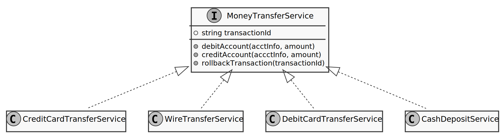
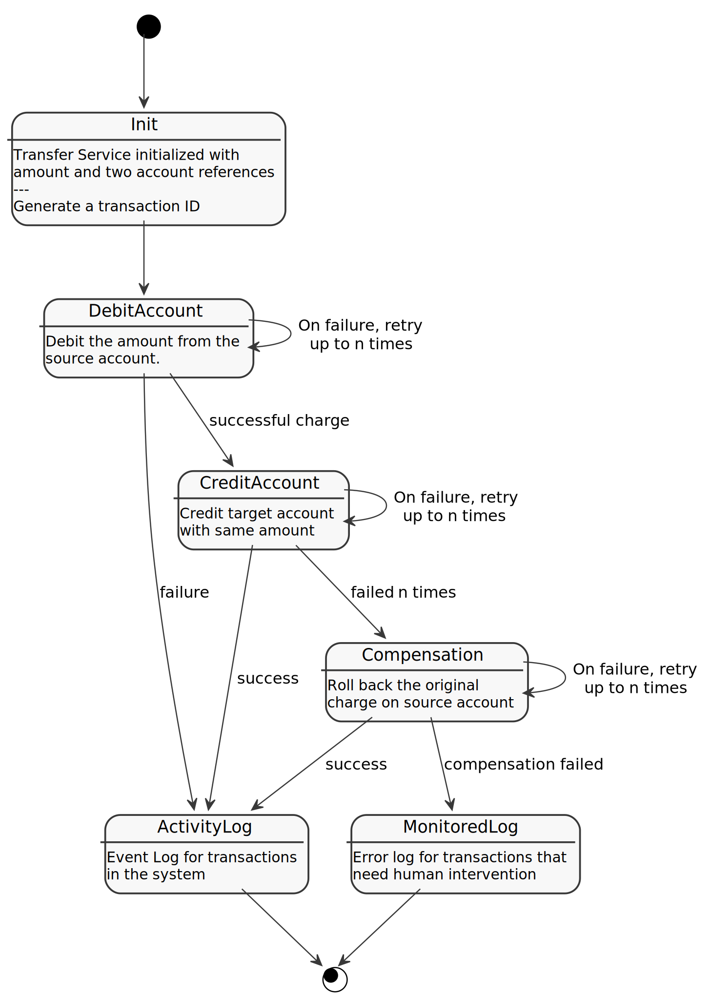
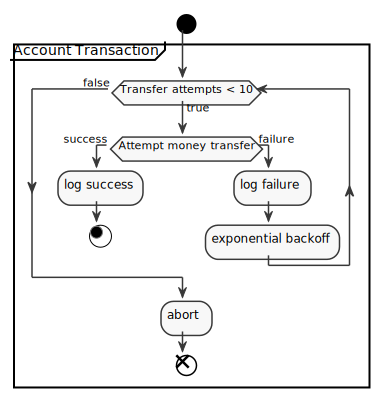

Constructing a rudimentary money transfer architecture
Always looking for something “fun” to think about in my free time, I ended up thinking about how I would implement a money wiring solution. This post looks at a few architectural decisions and patterns that are helpful for a possible solution. I’m going to touch on domain driven design (DDD), compensation strategies and a bunch of other things.
From naïve beginnings to further insight
It all started with a thought on how I would implement the transfer of money between bank accounts. I then realized, that it would make more sense to think about money transfers in general and came up with the following class diagram:

In this fairly trivial example, we have an interface, which requires a transaction ID and methods to debit one account and credit another. That of course is assuming that there are some kind of web interfaces we can use to initiate the respective transactions. Again, this is just a thought-experiment.
That interface can be realized by a number of different transfer types: credit card to bank account (credit card transfer), bank account to bank account (wire transfer) among others. The actual logic for how to accomplish that transfer is therefore located in the specific classes, which all implement the interface.
An interesting edge case would be how to deal with cash payments, in case this system would be used as a backend service in a grocery store, for example. In this case, we “only” receive money from the other party, but don’t have any information about a bank account. I don’t know enough about accounting practices, so this would be a case to talk to the domain experts and find out about the bookkeeping procedures. I could imagine that the register’s internal payment log is compared to the actual content and the moment the cash is brought to the bank, there would be some sort of transaction recorded. I don’t know, so I won’t follow this line of thought further for the imaginary scenario in this post.
A question that remains is where to place this money transfer logic in our code base. According to domain-driven design (DDD) principles, the functionality discussed in this post would be a prime example of a domain service:
- Stateless functionality that
- represents a well-defined, self-contained principle/concept of the business domain which
- doesn’t conceptually fit into a domain object such as an entity or aggregate and
- models a transaction bracket in a single class.
So that’s what I would go with here; To create services that are self-contained pieces of functionality, but are all implementing a common interface, as shown in the UML diagram above.
To parallelize or not to parallelize …
One interesting question that comes up is whether we proceed with both transactions, the crediting and debiting of the accounts, at the same time or if we do those sequentially. Even though I’m a big fan of asynchronous programming, I would decide on the two step sequence, for the following reason:
If we run both transactions in parallel, the handling of error cases becomes much more complicated. For example, let’s assume the depositing of money has succeeded, but the debit transaction failed — repeatedly, maybe because of an overdrawn, invalid or closed account. Now we’re in the awkward situation of having created money out of nothing in the target account, and are at the mercy of the cleanup process to work. That, plus it feels funny to yank money out of an account after just having made the deposit — if a withdrawal by a third party is even allowed for a bank account. Again, this is probably a question for the domain experts, but I will proceed with the two-step solution by running the transactions in sequence, as laid out in the following state diagram:

Here, we start out by initializing the service with the requisite data like information of the involved accounts (bank or credit card account) as well as the amount to the transferred. At that time, we’ll also generate a unique transaction ID by which we can trace the steps and status of this transaction and which will be used to assign to log entries so we can follow every step of this transaction.
In the first step, we debit the source account by the specified amount. If we do get a failure during the transaction, we try again using an exponential backoff algorithm. After a certain amount of attempts, we declare the transaction as failed, write the occurrence into a log and finish the process. On a software product or web site, we would display an error message here, including a generic reason and any next steps the user can take.
Once, or if, the debit transaction succeeds, we’re starting to credit the target account with the specified amount. We again see here an exponential backoff algorithm being employed in case of failure. If all goes well, we log the successful transaction in the activity log for later reference, and call the process done.
If the debit action succeeded, and the crediting failed, we have to compensate for the withdrawn money, i.e. we have to give it back before calling it quits. In that case, we try run another transaction on the debit account, this time with the negative value of the transaction that already succeeded - in effect giving back the money we had already withdrawn. Hopefully, this transaction works (using retries here as well), but if all else fails, we’re going to write an entry into a monitored log, so that a human can take a look and resolve the issue by whichever means necessary. This log should be separate from the ActivityLog in order to not overwhelm the users of this log.
One word about logs: Since we’re dealing with financial transactions in this example, and also because the system admins might want finer-grained information, we should probably also write log entries after each step and failed retry. That way, we have all the information to reconstruct why a transaction, or a series of different transactions, failed. In case of server outages or longer term failures, these logs might prove crucial to finding the problem fast.
Details of the DebitAccount and CreditAccount steps
Let’s take one last, quick, look at the DebitAccount and CreditAccount state in the previous diagram. I already mentioned what they do, but here is a graphic explaining their functionality:

Here’s what’s happening:
- Each type of transaction starts out by making an attempt to transfer the money, since the number of attempts is 0.
- If that attempt succeeds, we’re making a note in a log and call it a day.
- If the attempt fails, we’ll log that failure and try again, thereby increasing the attempt count by one.
- We’re also, as mentioned in this diagram, using an exponential backoff machanism
so we don’t blast the server with our requests, which have just failed anyway. The other benefit of the backoff is that we’re giving the target system more time to get back in working condition and don’t just forge ahead. However, after a predefined number of retries, we’re failing (aborting) the process.
Summary
In this post, I have looked from a fairly high level, and with limited domain knowledge, at the logic of making money transfers between bank accounts. Despite that coarse treatment, a few insights were gained regarding the structuring of the code and potential difficulties in the business logic. Some questions were raised, which require the cooperation of a subject matter expert.